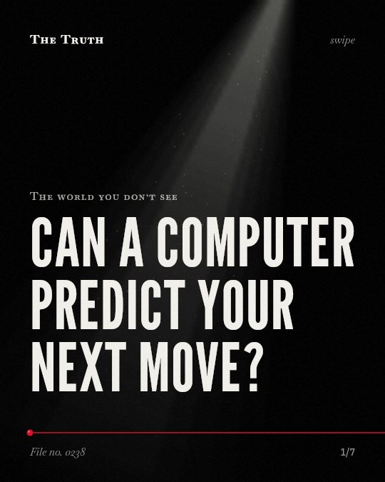

The world you don’t see
Can a computer predict your next move?

Predictive software can hide the reasoning behind police decisions.
The use of these tools can make it difficult for law enforcement to provide an account of their decisions in important ways.
Established. Several studies combined, or official data. The evidence is mixed.
What the research found
Algorithmic decision-making in police practice is embedded within a continuous human–computer negotiation that includes professional judgement and discretion.
“our research shows that they are embedded within a continuous human–computer negotiation that incorporates a rooted claim to ‘professional judgement’, an integrated intelligence context and a significant level of discretion.”
Study, 2017. Dencik et al., New Media & Society.
Including past behavior in models of health behavior is important to yield precise estimates of model effects.
“inclusion of past behavior in RAA tests is important to yield precise estimates of model effects.”
Meta-analysis, 2018. Hagger et al., Social Science & Medicine.
The use of predictive software can undermine the ability for individual officers or law enforcement agencies to give an account of their decisions in important ways.
“The use of predictive software can undermine the ability for individual officers or law enforcement agencies to give an account of their decisions in important ways.”
Study, 2016. Moses & Chan, Policing & Society.
Social media's technical affordances provide new opportunities for surveillance and risk communication, which can augment the police's control of their public visibility.
“By offering new opportunities for surveillance, risk communication, and impression management, emergent technologies augment the police's control of their public visibility and that of the social world.”
Review, 2018. Walsh & O’Connor, Sociology Compass.
Predictive policing is intended to forecast where and when crimes will take place in the future.
“The goal of predictive policing is to forecast where and when crimes will take place in the future.”
Study, 2016. Moses & Chan, Policing & Society.
The results of behavioral analytics and predictive modeling imply that training programs should focus on improving data literacy among decision-makers.
“The results also imply that training programs should focus on improving data literacy among decision-makers.”
Experiment, 2026. Raja, Zenodo (CERN European Organization for Nuclear Research).
Algorithms are part of a human negotiation.
Predictive policing is not a solo machine process. It is a continuous negotiation between computer models and human professional judgment and discretion.
Your past behavior is a data point for your future.
Models require your past behavior to yield precise estimates. This may be why your previous actions are used to forecast your next moves.
This part is our reading of the evidence, not a finding.
You post a photo of your evening routine.
The technical affordances of social media provide new opportunities for surveillance and risk communication.
The honest summary
The sources confirm that predictive modeling is used for governance and behavior analysis, but emphasize that these systems are mediated by human judgment and lack rigorous independent validation.
There is no unified body of knowledge regarding the relationship between social media and policing, and many claims about the success of predictive technologies are not based on independent, peer-reviewed evaluations.
Who is making the decision for your tomorrow?
Sources
- Martin S. Hagger, Juho Polet, Taru Lintunen (2018). The reasoned action approach applied to health behavior: Role of past behavior and tests of some key moderators using meta-analytic structural equation modeling. Social Science & Medicine. Meta-analysis, cited 188 times.
- Lina Dencik, Arne Hintz, Zoe Carey (2017). Prediction, pre-emption and limits to dissent: Social media and big data uses for policing protests in the United Kingdom. New Media & Society. Study, cited 94 times.
- Lyria Bennett Moses, Janet B. L. Chan (2016). Algorithmic Prediction in Policing: Assumptions, Evaluation, and Accountability. Policing & Society. Study, cited 416 times.
- James P. Walsh, Christopher D. O’Connor (2018). Social media and policing: A review of recent research. Sociology Compass. Review, cited 145 times.
- Dr. V. Antony Joe Raja (2026). BEHAVIORAL ANALYTICS, PREDICTIVE MODELING, AND DATA-DRIVEN HUMAN DECISION INTELLIGENCE. Zenodo (CERN European Organization for Nuclear Research). Experiment.
Also read for this file, not quoted
This file was researched and drafted by software, then checked by rules a model cannot talk its way around: each quote above was matched word for word against the paper, and every number had to appear in it. How files are made.